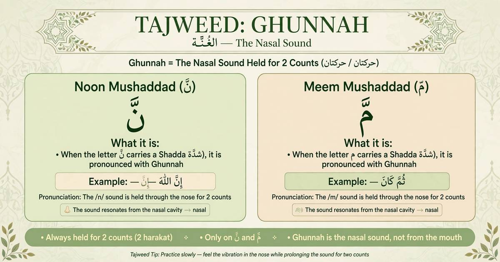

What Is Ghunnah in Tajweed? Rules & Examples

Ghunnah (غُنَّة) is a nasal sound used when reciting the Quran. It is an important part of Tajweed, the set of rules that helps Muslims pronounce Quranic Arabic correctly.
Ghunnah is especially clear in Noon Mushaddad (نّ) and Meem Mushaddad (مّ), where it is held for two counts (two harakah). It also occurs in other Tajweed rules, including Ikhfa, Iqlab, and Idgham with Ghunnah.
In this guide, you will learn what Ghunnah sounds like, when to apply it, and how to practise it with simple Arabic examples.
What Does Ghunnah Mean?
Ghunnah is a nasal resonance produced through the nose. It accompanies the letters Noon (ن) and Meem (م) in specific recitation situations.
To practise it, pronounce the letter gently and allow the nasal sound to resonate without adding an extra vowel or changing the word. A qualified Quran teacher can help you hear the difference between a correct Ghunnah and an incorrect pronunciation.
1. Ghunnah in Noon Mushaddad and Meem Mushaddad
The clearest beginner examples occur when Noon or Meem has a shaddah (ّ). In these cases, the Ghunnah is held for two counts.
- إِنَّ — Inna: the Noon has a shaddah, so pronounce its Ghunnah for two counts.
- ثُمَّ — Thumma: the Meem has a shaddah, so pronounce its Ghunnah for two counts.
- النَّاس — An-naas: the Noon with a shaddah carries Ghunnah.
Do not measure two counts as a fixed number of seconds. The duration follows the pace of recitation and the established timing of the harakah.
2. Ghunnah in Other Tajweed Rules
Ghunnah is also part of several rules involving a Noon Sakinah, Tanween, or Meem Sakinah. The exact application depends on the letter that follows and the rule being applied.
Idgham with Ghunnah
In Idgham with Ghunnah, the Noon Sakinah or Tanween merges into the following letter with nasal resonance. The letters are commonly remembered as ي، ن، م، و (Ya, Noon, Meem, Waw).
Read more: Idgham in Tajweed.
Ikhfa
Ikhfa involves concealing the Noon Sakinah or Tanween sound before certain letters while maintaining Ghunnah. The quality of the nasal sound depends on the recitation context.
Read more: Ikhfa in Tajweed.
Iqlab
Iqlab occurs when Noon Sakinah or Tanween is followed by ب (Ba). The sound changes to a concealed Meem with Ghunnah.
Read more: Iqlab in Tajweed.
How Long Should Ghunnah Last?
For Noon Mushaddad and Meem Mushaddad, Ghunnah is held for two counts (two harakah). A count is a unit of recitation timing, not a fixed one-second measurement.
Practise at a comfortable pace. Avoid cutting the nasal sound short, stretching it unnecessarily, or adding an extra vowel after the letter.
Common Ghunnah Mistakes
- Making it too short: the nasal sound may not be clear enough.
- Stretching it too long: keep to the correct two-count timing where required.
- Using the throat instead of nasal resonance: listen carefully and practise with a teacher.
- Adding an extra vowel: keep the original word and its pronunciation intact.
- Ignoring context: Ghunnah is applied according to the Tajweed rule and the letters involved.
How to Practise Ghunnah at Home
- Start with the examples إِنَّ and ثُمَّ.
- Listen to a reliable Quran recitation and notice the nasal sound.
- Repeat each example slowly while maintaining the two-count timing.
- Practise words containing Ikhfa, Iqlab, and Idgham with Ghunnah.
- Ask a qualified teacher to listen and correct your pronunciation.
Reading explanations helps, but listening and receiving correction are important for learning accurate Quran recitation.
Learn Tajweed with a Qualified Teacher
Al Shimaa Quran Academy offers online Quran lessons with qualified teachers for children and adults, including beginners who want to improve their recitation step by step.
Frequently Asked Questions
What is Ghunnah in Tajweed?
Ghunnah is a nasal sound used in Quranic recitation, particularly with Noon and Meem in specific Tajweed rules.
How many counts is Ghunnah?
Ghunnah in Noon Mushaddad and Meem Mushaddad is held for two counts (two harakah). The time in seconds varies with recitation speed.
Which letters have Ghunnah?
Ghunnah is associated with Noon (ن) and Meem (م). It is especially clear when either letter carries a shaddah, and it is also applied in rules such as Ikhfa, Iqlab, and Idgham with Ghunnah.
Can beginners learn Ghunnah online?
Yes. Beginners can study the rules online and improve through listening, repetition, and correction from a qualified Quran teacher.